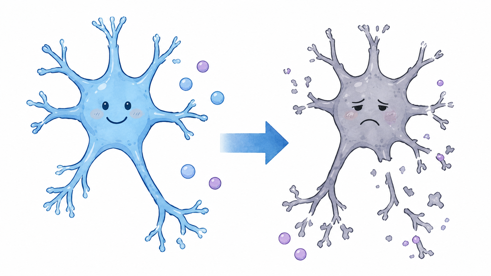
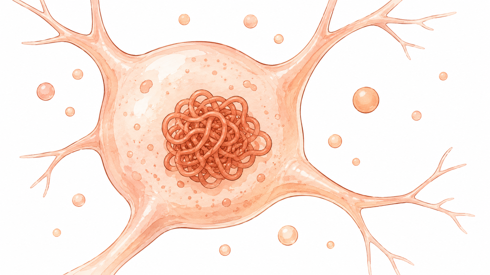
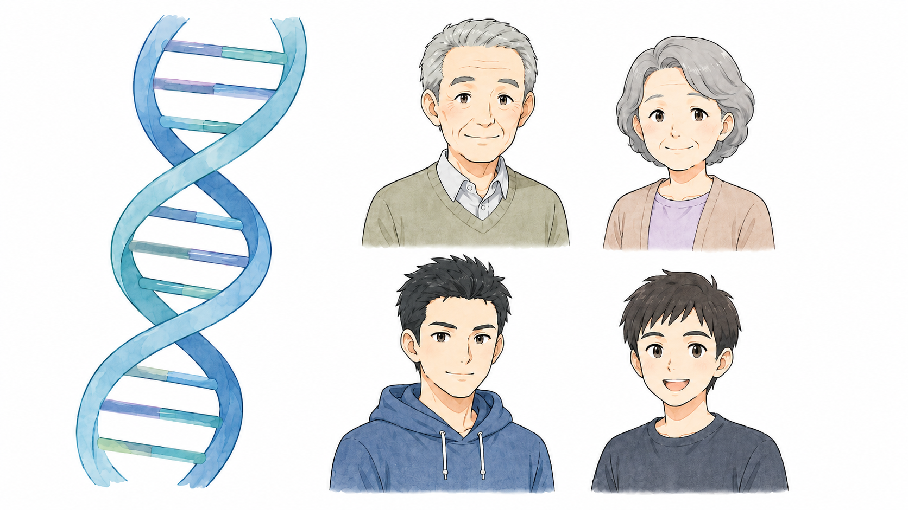
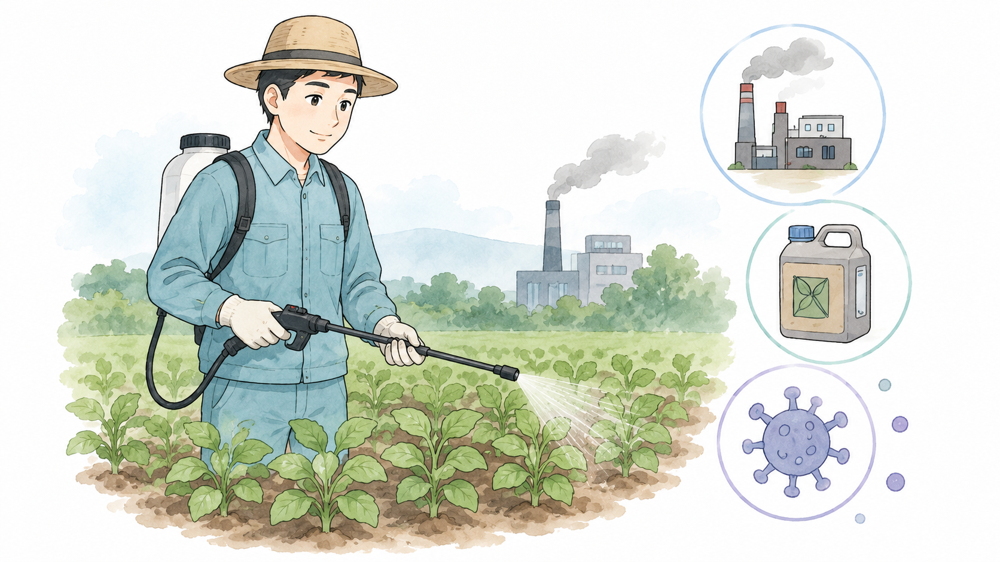
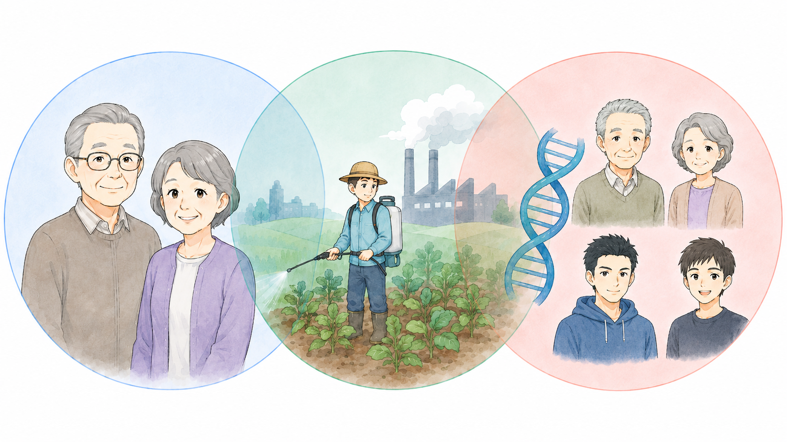

パーキンソン病の
原因について
パーキンソン病の原因は完全には解明されていませんが、脳内のドパミン神経の変性・脱落が主な要因であることがわかっています。
研究によって、いくつかの要因が関わっていると考えられています。
考えられる5つの要因
ドパミン神経の変性・脱落

ドパミンは、体の動きをスムーズにコントロールする重要な神経伝達物質です。これが不足すると、震えや動作の遅れ、筋肉のこわばりなどの運動症状や、不安・うつ・自律神経障害などの非運動症状が現れます。
αシヌクレインの異常蓄積
アルファシヌクレイン

最近の研究では、脳内で「αシヌクレイン」というタンパク質が異常に蓄積し、それがドパミン神経細胞を変性させることがパーキンソン病の発症に関与していると考えられています。これが「レビー小体」と呼ばれる異常なタンパク質の塊を形成し、神経の働きを阻害します。
最近では、このαシヌクレインの異常な蓄積を取り除くことを目的とした治療薬の開発も治験などの対象に一部なっています。
遺伝的要因

一部の患者さんでは、特定の遺伝子の変異が関連していることがわかっています。特に、若年発症のパーキンソン病（50歳未満で発症するケース）では、遺伝的要素の関与が大きいとされています。
ただし、家族歴がない人でも発症することが多く、ほとんどは遺伝だけで説明できるものではありません。
環境要因

遺伝的要因だけでなく、環境要因も関与すると考えられています。研究では以下のような要因が指摘されています。
農薬や化学物質への長期間の曝露
特に農薬や一部の工業用化学物質（例：パラコート、トリクロロエチレン）がリスクを高める可能性があるとされています。
金属や毒素の影響
特定の重金属（例：マンガン）や環境中の有害物質への曝露が関係する可能性があります。
ウイルス感染の影響
一部のウイルス感染が神経変性を引き起こす可能性も考えられていますが、明確な証拠はまだ不十分です。
加齢
パーキンソン病の発症リスクは、加齢とともに高くなることが知られています。ドパミンを産生する神経細胞は年齢とともに自然に減少しますが、パーキンソン病ではその進行が通常よりも早いと考えられています。
まとめ
